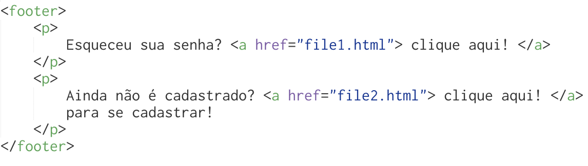
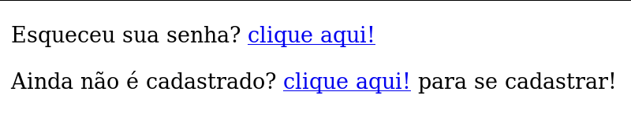
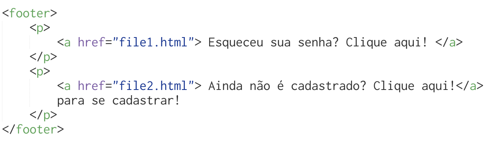
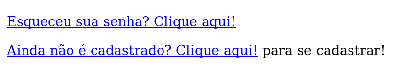
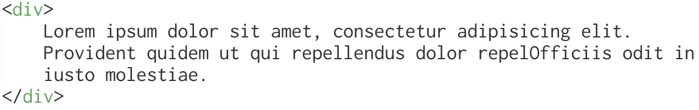
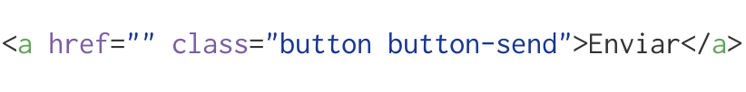
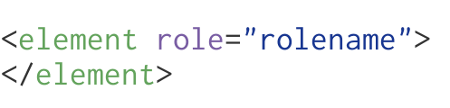

Use os elementos de forma semântica!Existem elementos pra fazer isso!
2.WAI-ARIA
Web Acessibility Initiative Accessible Rich Internet Applications
Regras imbutidas como atributo no nosso código que ajuda os leitores de tela na descrição do conteúdo.

v1.0 Publicado como uma recomendação da W3C no dia 20 de Março de 2014.
Abstract
Widgets
Document Structure
Landmarks
Landmarks
application
banner
complementary
contentinfo
form
main
search
role="application"A region declared as a web application, as opposed to a web document.
role="banner"A region that contains mostly site-oriented content, rather than page-specific content.
role="complementary"A supporting section of the document, designed to be complementary to the main content at a similar level in the DOM hierarchy, but remains meaningful when separated from the main content.
role="contentinfo"A large perceivable region that contains information about the parent document.
role="form"A landmark region that contains a collection of items and objects that, as a whole, combine to create a form. See related search.
role="main"The main content of a document.
role="search"A landmark region that contains a collection of items and objects that, as a whole, combine to create a search facility. See related form.
Público-alvo não é definido por características físicas, características sociais, monetárias ou sexuais. Público-alvo é definido simplesmente pelo interesse no conteúdo. Talita Pagani - Front in Sampa 2016